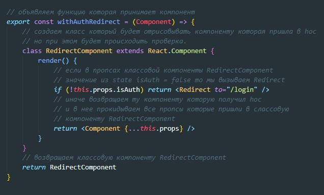
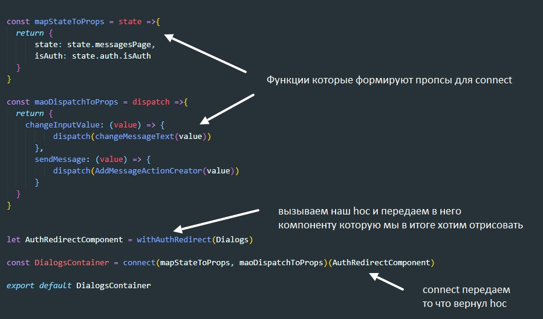
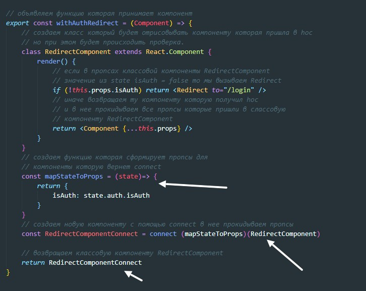

High Order Component - компонента высшего порядка - это функция которая принимает компонент и возвращает другой компонент (контейнерный)
Hoc принято называть с приставкой with, так как она добавляет компоненте либо дополнительные пропсы, либо добавляет какую-то логику
Создаем отдельную директорию и там создаем файл который будет содержать HOC
В нашем примере мы будем вот что делать. Так же как и в Redirect нам надо добиться что бы если в state значение isAuth = false то при переходе на страницу с сообщениями нас переносило на страницу с логином. Создаем тело hoc
Но откуда в классовой компоненте RedirectComponent возьмутся пропсы. Они прокинутся в него так как мы будем эту компоненту использовать в функции connect
В этом примере есть одна неточноть, что бы hoc корректно работал мы должны в mapStateToProps создавать ключ который по сути не нужен компоненте Dialog, этот элемент нужен исключительно для hoc. Поэтому нужно сделать так что бы hoc изначально сам по себе имел доступ до этого значения.
Для исправления ситуации мы можем внутри hoc применить connect к нашей компоненте котору мы возвращаем тем самым прокинуть внее те пропсы которые нужны только hoc
